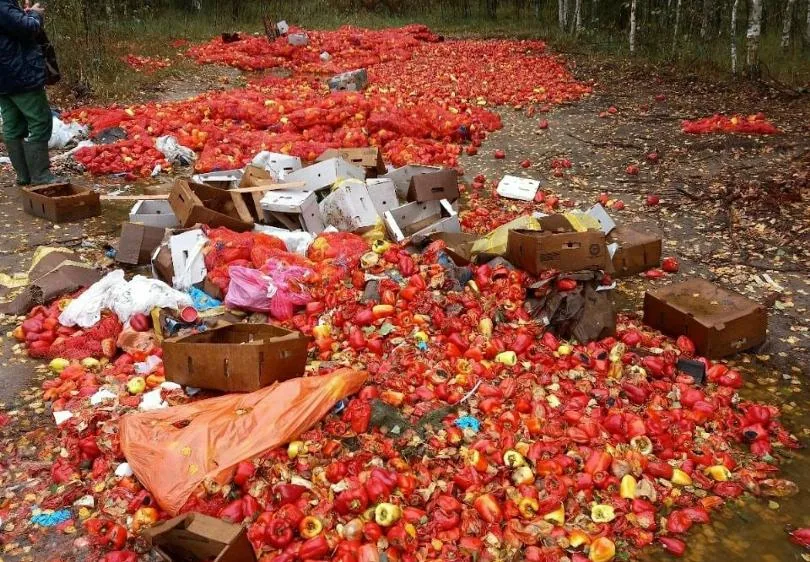
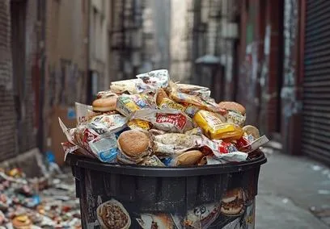

Реальность отходов
Масштабы загрязнения, которые мы пытаемся остановить


Источник цифр: UNEP Food Waste Index Report 2024. Фотографии — архив автора проекта.
Рециклинг и циркулярная экономика
Возвращение отходов к жизни
Превращение бывшего полезного в новое полезное.
Иерархия обращения с отходами
Биоконверсия BSF стоит между переработкой и восстановлением: из отходов получают продукт, а остаток — энергию и удобрение.
| Шаг | Что значит | Мини-пример |
|---|---|---|
| Rethink | переосмыслить: не создавать отход в принципе | многоразовая тара вместо одноразовой |
| Reduce | сократить количество отходов на единицу продукции | продажа продуктов без избыточной упаковки |
| Reuse | использовать вещь повторно без переработки | возвратная тара; ремонт вместо замены |
| Recycle | переработать в материал | макулатура — в новую бумагу, металлолом — в металл |
| BSF | биоконверсия органики личинкой | пищевые отходы — в БЛК и фрасс |
| Recover | извлечь энергию или питательные вещества | сжигание с получением тепла; фрасс — в удобрение |
Порядок — от предотвращения отходов к их восстановлению: чем выше шаг, тем меньше ресурсов теряется.
Мировые лидеры успеха
Лёгкий старт рециклинга
Бизнес-циклы, которые уже работают и приносят прибыль
Сравнение фракций
| Фракция | Переработка | Сложность сбыта |
|---|---|---|
| Металл | высокая: развитый рынок лома | низкая |
| Бумага и картон | около половины мировой бумаги возвращается в оборот | низкая |
| Стекло | частично, зависит от региона | средняя |
| ПЭТ | перерабатывается, но доля ограничена | средняя |
| Смешанный пластик | около 9% всех пластиковых отходов | высокая |
| Органика | прибыльного цикла нет | высокая |
Доли переработки считаются по разным методикам, сравнение ориентировочное. Пластик — OECD Global Plastics Outlook, 2022.
Порядок появления бизнес-циклов повторяет простоту сбыта: от металла к сложным фракциям.
Тупик текущих решений
Почему существующие методы не работают как бизнес
Компостирование занимает от нескольких недель до месяцев и требует больших площадей. RDF требует сортировки и сушки, даёт низкую теплоту сгорания и ограниченный сбыт.
Почему экономика не сходится
Качественная схема без числовых значений: затраты выше стоимости продукта.
Именно поэтому сейчас ищутся новые технологические решения для превращения пищевых отходов и «хвостов» пластика в реальный актив.
Анатомия ТКО
Что на самом деле представляет собой «городской мусор»
ТКО — твёрдые коммунальные отходы: мусор из жилых помещений, офисов и общественных мест.
Средний состав
| Фракция | Доля |
|---|---|
| Бумага и картон | 39% |
| Пищевые (органические) отходы | 30% |
| Текстиль | 6% |
| Полимерные материалы | 5% |
| Стекло | 4% |
| Дерево | 3% |
| Чёрный металл | 3% |
| Кожа и резина | 1% |
| Цветной металл | 1% |
| Прочее | 8% |
Усреднённый состав ТКО в России по справочнику НДТ (Росстандарт, 2016), приведён в альбоме лучших практик ППК РЭО, 2023. Методика устарела; по федеральной схеме 2023 года пищевые отходы — около 20 млн т из 59,7 млн т, то есть примерно треть («Коммерсантъ»).
Региональные особенности
Муха чёрная львинка
Hermetia illucens, BSF — муха, личинки которой перерабатывают органику и накапливают белок и жир.
Источники: Eawag: Black Soldier Fly Biowaste Processing — A Step-by-Step Guide (2nd ed., PDF); IWMI: Operational efficiency and economic insights of BSF farming (Adamtey et al., 2025); Ferdousi et al., 2020: жизненный цикл BSF (DOI).
БЛК и рыбная мука
БЛК — не копия рыбной муки, а её функциональный аналог: другой баланс белка и жира, другое сырьё и другая цена.
| Показатель | Рыбная мука | БЛК (личинка BSF) |
|---|---|---|
| Сырой протеин, % СВ | 68 (57–76) | 57 (41–71) |
| Сырой жир, % СВ | 10 (2–18) | 12 (4,6–21) |
| Сырьё | вылов рыбы | пищевые отходы |
| Цена, ₽/кг | 130–150 | 201; цель — 96 |
| Назначение | комбикорма | комбикорма |
Средние значения, в скобках — диапазон. Источники: Feedipedia: Fish meal, type 62 protein; Feedipedia: Black soldier fly larvae, dehydrated. Цены — по материалам проекта.
Рыбная мука в комбикормах
Рыбная мука — концентрированный источник белка, который добавляют в комбикорма для разных групп животных.
Производство комбикормов в мире
Рост идёт второй год подряд — вместе с ним растёт и спрос на белковые ингредиенты.
| Год | Комбикорма, млрд т | Динамика |
|---|---|---|
| 2023 | 1,38 | — |
| 2024 | 1,40 | +1,2% |
| 2025 | 1,44 | +2,9% |
За два года +4,3%. Сопоставимый ряд с 2023 года: в 2023-м Alltech изменил охват и пересчитал базу. Источник: Alltech Agri-Food Outlook 2026.
Источник: Feedipedia: Fish meal (разделы Pigs, Poultry, Fish, Crustaceans; данные OECD-FAO, 2025).
Рынок рыбной муки
Мировое производство, экспорт и потребление рыбной муки, млн т.
Производство держится в узком коридоре 4,5–5,3 млн т: предложение ограничено выловом мелкой пелагической рыбы — анчоуса, сардины, менхэдена. Экспорт — около 2,5–3,2 млн т в год. Средняя цена выросла с 1 168 USD/т в 2016/17 до 2 228 USD/т в 2025/26, но росла не каждый год: в 2018/19–2019/20 и 2024/25 было снижение.
Производство аквакультуры, млн т
Драйвер спроса на рыбную муку: FAO, все виды аквакультуры, включая водоросли.
+30,7% за 2016–2024 (шкала начинается со 100 млн т). Тоннаж аквакормов Alltech сопоставим только с 2022 года: 52,9 млн т (2022) → 55,5 млн т (2025), +4,9%.
Рыбная мука — маркетинговый год, аквакультура — календарный. Источники: USDA FAS: World Fish Meal Supply and Distribution (2026); Feedipedia: Fish meal (5–6 млн т в год, прогноз 5,9 млн т к 2034 году); FRED: Global price of Fish Meal (IMF); World Bank / FAO: Aquaculture production; Alltech: аквакорма 2025.
История ферм BSF
От лабораторной переработки навоза до вертикальных фабрик — и обратно к проверке экономики.
Шесть этапов развития отрасли, по состоянию на 2026 год.
| Период | Этап | Формат производства |
|---|---|---|
| до 2000-х | Научно-прикладные исследования | лабораторные ёмкости, открытые площадки, ручное культивирование |
| 2000–2010 | Биоконверсия и кормовые испытания | небольшие пилоты, контейнеры, ящики и неглубокие лотки |
| 2010–2016 | Первая венчурная волна | пилотные и демонстрационные фермы |
| 2017–2020 | Индустриализация | климатизированные здания, стеллажи, лотки, механизация |
| 2021–2023 | Эпоха мегазаводов | вертикальные фабрики, роботизированная логистика, переработка в муку и жир |
| 2024–2026 | Коммерческая проверка | оптимизация действующих заводов, модульные пилоты, интеграция с агропредприятиями |
Мощности заводов и суммы раундов — заявленные компаниями; раунд финансирования не равен стоимости конкретного завода. Источники: Rethink Priorities: инвестиции в insect farming; Entobel: открытие завода Ba Ria–Vung Tau (2023); Eawag: Black Soldier Fly Biowaste Processing (2nd ed., PDF).
От комнатной мухи к львинке
Переработка навоза личинками мух — не новая для России тема: направление прошло через советские институты, сменило вид насекомого и вернулось уже как BSF-проекты.
Россия сегодня
| Компания | Площадка | Масштаб |
|---|---|---|
| Энтопротэк | Пензенская область | опытно-промышленный цех с 2018 г., до 15 т отходов в сутки |
| Карелбиотех | Петрозаводск | с 2022 г., около 5 т личинки в месяц, племенной инсектарий |
| Энтопром | Канаш, Чувашия | проект на 2 250 т живой личинки в год, запуск в 2027 г. |
| Ястро-Инновации | Омская область | проект промышленного производства, сроки переносились |
| Костромская ГСХА, «Сандер» | Кострома | научно-производственный проект замкнутого цикла |
Мощности — проектные или заявленные компаниями.
Беларусь
Источники: В.И. Козлов: экспериментальный биоцех НСХИ (Н.Н. Моисеев); Сборник трудов НСХИ, 1986; А.с. СССР № 1491424; Патент РФ № 2390126; Российская газета: НГАУ и чёрная львинка (2023); Forbes: рынок насекомых в РФ (2023); Интервью «Энтопротэк» (2025); РБК Карелия: «Карелбиотех»; «Энтопром», Канаш (2025); ПолесГУ: проект чёрной львинки; БГТУ: выделение белковой и липидной фракций (2022); С. Макаров: опытное производство в Минской области.
Современная BSF-ферма
Отрасль прошла фазу мегазаводов и смещается к модульности, интеграции с агропромом и премиальным продуктам.
Три слоя: бизнес-модели, архитектура, технология.
Бизнес-модели
Архитектура
Технология
Мощности и форматы — по публичным данным компаний и отраслевым обзорам на 2026 год. Источники: Entobel: производственные площадки; Innovafeed: модель промышленного симбиоза; Bühler: insect technology; AgFunderNews: состояние отрасли.
Технологическая карта
Современный техпроцесс BSF-фермы — восемь блоков: от приёма сырья до БЛК, удобрений и склада родительской куколки.
Схема соответствует технологической карте проекта: блоки A, C, C1, D1, D2 проработаны, B и P — частично, S — пробел.
Цена БЛК и доля ФОТ
Расчёт из бизнес-плана NEYTAN (Беларусь): как меняется себестоимость БЛК, если убрать ручной труд.
Модель разработана командой NEYTAN. Сергей и Глеб вели селекцию BSF, чтобы вывести продукт на цену рыбной муки; цель не была достигнута. Поэтому цифры отражают реальную границу традиционной технологии, а не оптимистичный сценарий.
| Показатель | Традиционная модель | Без ФОТ |
|---|---|---|
| Персонал в техпроцессе | 12 человек | 0 человек |
| Доля ФОТ в OPEX | 52,5% | 0% |
| Себестоимость 1 кг БЛК | 201,3 ₽ | 95,7 ₽ |
Расчёт на 1000 кг сухой личинки в сутки. Цены — в уровне на дату разработки бизнес-плана. 95,7 ₽ — расчётный сценарий при нулевом ФОТ, а не подтверждённая себестоимость: его предстоит проверить на прототипе.
Автоматизация вокруг старой технологии
Роботы, конвейеры и автоматизированные линии сами по себе не убирают причину затрат: они надстраиваются над прежней производственной единицей — лотком.
Оценка проекта, а не измеренный результат; проверяется на прототипе.
Больше — не значит дешевле
В нефтепереработке логика простая: чем крупнее завод, тем ниже удельные затраты. В BSF эта логика не срабатывает.
Масштабируется не химический реактор, а количество лотков с живым субстратом. Вместе с ними растут логистика, климатизация, риск саморазогрева и нагрузка на сушку, а узкие места — репродукция и сушка — от размера цеха не исчезают.
| Компания | Масштаб | Что показал опыт |
|---|---|---|
| Ÿnsect, Франция (мучной хрущак) | гигафабрика 48 000 м², привлечено более $600 млн | выручка €17,8 млн (2021) при убытке €79,7 млн (2023); процедура защиты в 2024, ликвидация в декабре 2025 |
| Agronutris, Франция | проект около 15 тыс. т ингредиентов, завод на 70 тыс. т отходов в год, оборудование Bühler | процедура защиты в январе 2025, спасение с €10 млн; риск длительного выхода на мощность |
| ENORM, Дания | крупная автоматизированная фабрика | работа прекращена в 2025 году |
| Protix, Нидерланды | действующий автоматизированный завод | расширение в Польше и совместное предприятие с Tyson поставлены на паузу |
| Entobel, Вьетнам | 10 тыс. т белка в год, 50 уровней | работает в связке с тёплым климатом, сырьевой базой и рынком аквакормов; раунд $33 млн не равен CAPEX завода |
| Bühler, Швейцария | поставщик сквозных линий, центр insect technology в Уцвиле; проекты Protix, Agronutris, Agroloop в Венгрии | узким местом масштабирования называет не размер цеха, а стабильное производство молодняка; минимально рентабельный масштаб — 50–150 т субстрата в сутки, выраженный эффект масштаба — 200–500 т |
Ÿnsect работает с мучным хрущаком, остальные — с BSF; класс проектов и логика масштабирования те же. Мощности — проектные или заявленные.
Источники: Reuters: Ÿnsect — защитная процедура (2024); TechCrunch: ликвидация Ÿnsect (2025); Bühler и Entocycle: партнёрство (2023); Bühler: оценка рентабельного масштаба; AgFunderNews: состояние отрасли.
Вертикальные фабрики: экономия на земле
Завод Entobel во Вьетнаме — 50 уровней выращивания, заявленные 10 тыс. т белка в год, запуск в ноябре 2023 года. Площадка компактная, но высота создаёт климатическую задачу.
Конкретные параметры градиента на заводе Entobel публично не раскрыты; схема показывает общий эффект многоярусных систем. Источники: Entobel: открытие завода (2023); Entobel: производственные площадки.
Кто такие «Мы/Я»

Связаться: +7 996 545-76-81 · Sv195503@yandex.ru
По образованию — инженер-судостроитель, кандидат технических наук; почти 20 лет преподавал строительную механику и сопротивление материалов в вузе. Более 25 лет в инноватике — началось ещё в вузе. Сейчас занимаюсь экологическими проектами: разрабатываю оборудование и техпроцессы для переработки органических отходов. В проектах моя роль — выдвинуть идею, довести её до концепции оборудования и техпроцесса, защитить интеллектуальную собственность и содействовать выводу проекта на рынок.
Что я делаю в проекте
Проекты, доведённые до оборудования
Помёт → BSF: основная база перехода
Именно проект по утилизации помёта позволил перейти к BSF. Его технологии и оборудование переносятся в переработку личинки и фрасса, а сравнение птицефабрики и BSF-фермы дало гипотезу о смене производственной единицы.
Проекты в проработке
Команда
Идеи и концепции в проектах мои, но реализация всегда шла в команде: инженеры, технологи, патентоведы, научные организации, производственные партнёры и инвесторы. В BSF-проекте к этой модели добавляется профильный биолог.
Почему это даёт уверенность в BSF-решении
Пилот на птицефабрике


Это промышленный пилот на действующем предприятии, а не лабораторная установка. Фотографии — личный архив автора, публикуются с его разрешения.
Видео
Ссылки
Агрохолдинг «Сибирский Премьер» · Реактор Коммерциализации · Empyrio
Птицефабрика и BSF: сходство, которое дало идею
Разные биообъекты — общая архитектура производства
Сходство не в биологии, а в промышленной организации: обе системы непрерывно воспроизводят биоматериал, управляют средой, синхронизируют партии и перерабатывают остатки.
Одноимённые по смыслу этапы расположены на одном уровне.
Сравнение по этапам
| Бройлерная птицефабрика | BSF-производство | Переносимый принцип |
|---|---|---|
| Родительское стадо | Маточное стадо BSF | Управляемое воспроизводство исходного биоматериала |
| Сбор инкубационного яйца | Сбор яйцекладок BSF | Учёт количества и качества репродуктивного материала |
| Инкубаторий | Инкубация яйца BSF | Управление температурой, влажностью и синхронностью вывода |
| Цыплята суточного возраста | Неонаты и молодая личинка | Стандартизация стартового биоматериала |
| Участок раннего выращивания | Nursery | Специальные режимы кормления и микроклимата |
| Птичники откорма | Модули откорма BSF | Изолированные производственные партии |
| Клеточные батареи | Каркас с технологическими модулями | Многоярусное использование объёма |
| Клетка или секция | Ростовая ёмкость | Локальная единица размещения биомассы |
| Комбикормовый участок | Подготовка субстрата | Рецептура, измельчение, смешивание и дозирование |
| Кормораздача | Дозированное кормление личинки | Равномерность питания и управление рационом |
| Вентиляция и отопление | Управление температурой, влажностью и газовым составом | Стабилизация среды обитания |
| Взвешивание птицы | Контроль массы и активности личинки | Прогноз готовности партии |
| Оборот стада | Оборот партий личинки | Планирование загрузки производственных мощностей |
| Убой и переработка | Сепарация, бланширование, сушка и измельчение | Превращение живой биомассы в товарный продукт |
| Переработка помёта | Обработка фрасса | Получение удобрения и энергетического продукта |
| Котельная и энергосистема | Сжигатель, теплообменник и рекуперация | Внутреннее энергетическое обеспечение |
| Ветеринарно-санитарный контроль | Биобезопасность и контроль микробиологии | Разделение партий, мойка, санитарная обработка |
| Производственная диспетчеризация | PLC/SCADA/MES и AI-агенты | Управление процессами на основе данных |
Схемы построены по технологической карте проекта; таблица — по сравнительному анализу проекта (bsf-team-report.md). Сходство отражает промышленную архитектуру, а не биологию: птица и личинка — разные объекты, и биологические режимы BSF требуют отдельной валидации.
Парадокс отрасли BSF
Премиальные рынки вместо массового
Отрасль научилась делать продукт, но не научилась делать его дешёвым. Поэтому продаёт там, где цена вторична.
Где работает отрасль
Премиальные сегменты, где платят за свойства, а не за тонну.
| Сегмент | Продукт | Почему премиальный |
|---|---|---|
| Корма для домашних животных | сушёная личинка, мука, жир | готовность платить за альтернативный белок, высокая маржа, меньше ценовое давление |
| Косметика и БАДы | липиды, хитин и хитозан, меланин | высокая добавленная стоимость при малых объёмах |
| Премиальная аквакультура | мука и жир для лосося и креветки | ограниченные объёмы, высокая цена конечного продукта |
| Экзотические животные и рептилии | сушёная личинка | нишевый спрос, цена не главный критерий выбора |
| Органоминеральные удобрения | фрасс, гранулы, биостимуляторы | премия за органику и замкнутый цикл |
Почему только премиум
Массовый рынок — это рыбная мука и соевый шрот: огромные объёмы, отлаженная логистика и покупатель, чувствительный к цене. Чтобы войти, БЛК должен стоить не дороже. Пока не получается: при почти бесплатном сырье затраты уходят в труд, энергию и оборудование. Отсюда парадокс: сырья много и оно дешёвое, а продукт остаётся дорогим.
Анализ выявил слабое звено — лоток
Попытка уйти от ручного труда внутри лоточной технологии приводит к другому: вокруг лотков выстраивается система автоматизации на основе общепромышленных роботов, конвейеров и шаттлов. Она добавляет капитальные затраты и вторичные расходы на обслуживание, но саму производственную единицу не меняет.
Отсюда карикатурная аналогия — снова по линии птицефабрики. Представьте, что примитивный деревенский курятник решили автоматизировать, не трогая его конструкцию: вокруг него бегает толпа современных антропоморфных роботов с вёдрами — комбикорма, воды, помёта. Технически возможно, экономически абсурдно: курятник остался курятником, а стоимость выросла.
С лотком происходит то же самое: он остаётся пассивной ёмкостью, вокруг которой движется автоматика. Вывод для современной BSF-фермы — уходить от лотка и менять саму производственную единицу.
Синтез нашёл замену лотку
Синтез промышленной логики птицефабрики и техпроцесса BSF дал новое техническое решение — активный модуль выращивания. Интеллектуальная собственность на него ещё не оформлена, поэтому до патентования технические подробности раскрываются только после подписания NDA.
Оценка проекта; сегменты и ценовые ориентиры — по отраслевым обзорам 2026 года.
Активный модуль выращивания
По функциям это аналог клеточного яруса птичника, а не лотка.
Модуль, в отличие от лотка, создаёт контролируемую, максимально комфортную среду обитания для личинки. Внутри него личинка получает то, чего лоток дать не может.
Оценка проекта; проверяется на прототипе.
Роботизация всей фермы
ИИ-агенты там, где АСУ не справляется
Общая схема роботизации производственного комплекса уже есть. Она показывает: роботизировать можно всю ферму, а не отдельные операции.
Схема роботизации комплекса

От блоков техпроцесса к управляющим агентам, затем к CPO и верхним уровням. Каждый участок фермы получает своего агента и передаёт данные наверх.
ИИ-агенты в контуре управления

В таком виде — с ИИ-агентами — можно роботизировать всю ферму. Но полная роботизация только на ИИ-агентах не рациональна.
Где ИИ нужен, а где нет
Пример: техническое зрение в выращивании
В систему управления вводится техническое зрение. Появляется дополнительный параметр контроля — характер движения личинок.
Проанализировать такие изменения в характере движения без использования ИИ очень сложно. Ещё сложнее выдать системе жизнеобеспечения модуля сигнал управления, который устраняет дискомфорт для личинки.
Схема
Нажмите Esc, чтобы закрыть.
Эксперимент с макетом
Проектные габариты, лабораторный уровень проверки
Эксперимент с личинкой оставался лабораторным: проверялось только соответствие модуля условиям обитания, но он показал — концепция альтернативы лоткам выбрана верно.
Прототип или MVP
Два варианта — две суммы
Выбор зависит от суммы привлечённых средств: прототип — около 5 млн рублей, MVP — около 10 млн.
| Вариант | Ориентир стоимости | Что даёт |
|---|---|---|
| Прототип | около 5 млн ₽ | подтверждение конструкции и условий выращивания |
| MVP | около 10 млн ₽ | работоспособный модуль с автоматизацией и роботизацией для испытаний |
Цели первого этапа
Что нужно доказать и проверить
Этап должен показать, что решение улучшает условия выращивания личинки и позволяет роботизировать процесс.
Главный резерв затрат — выращивание. Именно там проверяется гипотеза и создаётся основа для масштабирования.
Технические подробности устройства модуля — после NDA: ИС ещё готовится.
Инновации проекта
Распределены по всему техпроцессу
Инновации не сосредоточены в одном узле — они распределены по технологии и оборудованию, и каждая работает на рентабельность.
Подробный разбор — в следующей главе.
Контейнер-робот
Продукт второго этапа
На рынок выходит не ферма, а роботизированный контейнер выращивания личинки.
Разделение инкубатора и выращивания
Модуль едет к отходам
Современный тренд: инкубация, ясельный период и родительская популяция отделены от выращивания продуктовой личинки.
Источники: AgFunderNews: Series A Goterra; AFR: раунд Goterra 2024–2025; TechCrunch: Better Origin Series A; Better Origin: X1.
Следующие этапы: контейнерная линейка
Перенос оборудования с птицефабрики
После выхода на рынок развитие идёт контейнерами. Каждый — отдельный продукт, который можно выпускать, испытывать и вводить поэтапно.
Контейнеры линейки
| Контейнер | Основа | Роль/продукт |
|---|---|---|
| Энергоконтейнер (энерго/тепловой модуль) | сушилка-измельчитель и универсальный сжигатель — наработки птицеводства | собственное тепло для сушки; фрасс как топливо; ниже себестоимость переработки личинки в БЛК |
| Переработка личинки | типовое оборудование плюс наши наработки под энергоконтейнер | производство БЛК |
| Фрасс-удобрения | с использованием энергоконтейнера | гранулированное удобрение |
| Подготовка субстрата | параллельная линия | питательный субстрат для личинки |
| Инсектарий | параллельная линия | мухи-несушки и яйцекладки |
| Родительская куколка | параллельная линия | воспроизводство |
Инженерный задел от птицефабрики
Меньше инвестиций, короче путь на рынок, ниже себестоимость
Схожесть техпроцессов позволяет перенести в BSF-ферму уже готовые решения, разработанные и изготовленные для птицефабрик. Это даёт три эффекта.
Энергомодуль
Энергомодуль состоит из теплообменника, нашей сушилки и универсального сжигателя. Он используется на нескольких стадиях:
Что переносим и где используем
| Контейнер | Что используем готового/нашего из птицеводства | Функции/продукт |
|---|---|---|
| Энергоконтейнер (энерго/тепловой модуль) | сушилка-измельчитель, универсальный сжигатель, теплообменник | собственное тепло для сушки, отопления, пастеризации; фрасс как топливо |
| Переработка личинки | энергоконтейнер плюс дополнительная специальная сушилка-измельчитель нашей разработки из пищевой нержавейки | сушка личинки теплом от сжигания фрасса; измельчение личинки в муку |
| Фрасс-удобрения | энергоконтейнер плюс дополнительная сушилка-измельчитель | доработка фрасса перед компостированием и/или пеллетированием |
| Подготовка субстрата | энергоконтейнер | тепло для пастеризации питательного субстрата для личинки |
| Инсектарий | энергоконтейнер | отопление инсектария |
| Родительская куколка | энергоконтейнер | отопление модулей, в которых личинки дорастают и окукливаются |
Миссия проекта
Защищать нашу планету от накопления отходов, возвращая ценные ресурсы в природный цикл и помогая человечеству обеспечивать себя продовольствием.
Рыночный потенциал
Прогнозы оценивают мировой рынок BSF в 3,96 млрд долларов к 2033 году со среднегодовым ростом около 30,5%. Это прогнозы, а не факт, но тренд на замещение рыбной муки и сои устойчив.
| Прогноз | Рынок к 2033 | CAGR |
|---|---|---|
| Meticulous Research, 2022 | 3,96 млрд $ | 30,5% (2022–2033) |
| Meticulous Research, 2024 | 3,96 млрд $ | 31,0% (2024–2033) |
Сумма в обновлённом прогнозе сохранена, уточнён период и темп роста. Это рыночные оценки, а не гарантия.
Источники: Meticulous Research, 2022 (PR Newswire); обновление 2024 (PR Newswire).
Быстрый выход на рынок
Уже на второй итерации инвестирования — готовый контейнер-робот для выращивания личинки, источника БЛК.
Ранняя стадия
Биткоин тоже не сразу «взлетел до небес». Конечно, это не биткоин, но и не «фабрика по производству табуреток…» — как упоминал Кирилл Пшинник в одном из своих вебинаров.
Почему я уверен
Это проект — результат анализа перспективного бизнеса во всей его внутренней составляющей.
Елена (выпускница Зерокодера, которую Кирилл приглашал на один из своих вебинаров) так делает в своей ИИ-студии с офисными бизнес-процессами.
Мы погружаемся внутрь техпроцесса в реальном секторе экономики, проводим его анализ/экспертизу и модифицируем его под роботизацию по связке «техпроцесс — оборудование для его реализации».
Поиск единомышленников
Я разделяю точку зрения, что в инновационных проектах, особенно ранних стадий, команда — залог успеха. И солопринёрство, по моему мнению, не исключает наличие команды, заинтересованной в реализации проекта.
(Я не присутствовал на вебинаре Дмитрия Чернышева на эту тему. Смотрел его в записи, которую прислали менеджеры Зерокодера.)
К сотрудничеству
Такой «слабый» призыв к сотрудничеству — сознательный. Он ориентирован на тех, кому тема бизнеса на экологии действительно интересна и кто может себе позволить заниматься глобальными проблемами/проектами.